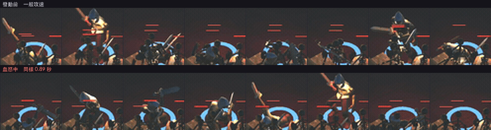
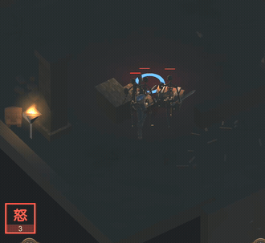

地城迴響 · 血怒
你回報「攻速不明顯、動畫沒有變快」。查下來比這個更糟： 血怒對攻擊完全沒有作用——間隔沒縮、硬直沒縮、動畫也沒加速。 真正生效的只有扣血、紅光與 buff 圖示。
攻速倍率是這樣定義的：
float SkillAtkSpeedMul => (rageT > 0f ? .45f : 1f); // 乘在冷卻上，越小越快
而實際算攻擊間隔的地方是這樣：
LastAttackInterval = Sw.cd * stats.cdMul
* (ShieldWallActive ? ShieldWallAtkSlow : 1f);
沒有 SkillAtkSpeedMul。全專案搜過，這個倍率只出現在兩個地方：
它自己的定義，以及一個給驗證用的存取子。它從來沒有被乘進任何計算裡。
而且舊的自動測試是「通過」的。它是這樣寫的：
Check("血怒", Demo.SkillAtkSpeedMulForVerify < .99f)
它驗的是那個屬性回傳 0.45，不是「攻擊真的變快了」。 屬性永遠回傳 0.45，所以不管倍率有沒有被使用，這項測試都會過—— 它測的是一個常數。你在實機上感覺不到，測試卻是綠的，原因就在這裡。
這是專案守則第 1 條講的同一件事：要打最靠近玩家行為的入口， 不要去問底層的數值。現在改成數實際揮了幾刀。
你的判斷方向是對的——只縮間隔不動動畫的話，看起來只是銜接比較緊、 甚至會像動作被切斷。所以四個環節要一起吃這個倍率：
| 環節 | 改動 | 不改會怎樣 |
|---|---|---|
| 攻擊間隔 | 乘上 0.45 | 出手頻率完全沒變 |
硬直 attackLock | 乘上 0.45 | 可以出手了人還被鎖著，節奏照舊 |
| 動畫播放速度 | 除以 0.45（＝2.22 倍速） | 你這次點名的：揮砍動作本身不會變快 |
傷害落點 hitDelay | 乘上 0.45 | 刀都收回去了才結算傷害 |
另外補了結束時的還原。AnimationState.speed 是掛在共用 state 上會留著的，
普攻每次出手都會重設所以自己會回復，但旋風斬與衝鋒是直接播同一支 clip 而不設速度——
少了還原的話，血怒退了之後第一次放旋風斬會用 2.22 倍速播。
（石膚忘了還原顏色導致角色一直是灰的，是同一種錯。）
平常與血怒交錯各兩段、每段 4 秒（單純前後比會被敵人位置的漂移汙染）：
| 第一輪 | 第二輪 | 平均 | |
|---|---|---|---|
| 平常 4 秒內揮刀 | 8 | 8 | 8.0 |
| 血怒 4 秒內揮刀 | 17 | 17 | 17.0 |
| 出手次數倍率 | 2.13 倍（設定 2.22） | ||
| 動畫播放速度 | 1.35 → 3.00＝2.22 倍 | ||
| 自然到期後 | 1.00（沒有殘留加速） | ||


驗證本身也修了兩次，兩次都是我的量法錯，不是產品錯。
① 第一版判「有沒有還原」拿 1.00 當標準，但單手劍的基準本來就是 1.35， 於是把「已經正確還原」誤判成漏還原。改成跟武器自己的基準比。
② 第二版是呼叫 ClearBuffsForVerify() 之後才量——那個函式直接把
rageT 歸零，繞過了計時器到期的那條分支，等於在驗測試工具自己的行為，
而且會因為期間有沒有剛好揮到刀而時好時壞。改成等血怒自然到期再量。
（順帶把那個函式也補上還原，免得它留下產品不會有的狀態。）